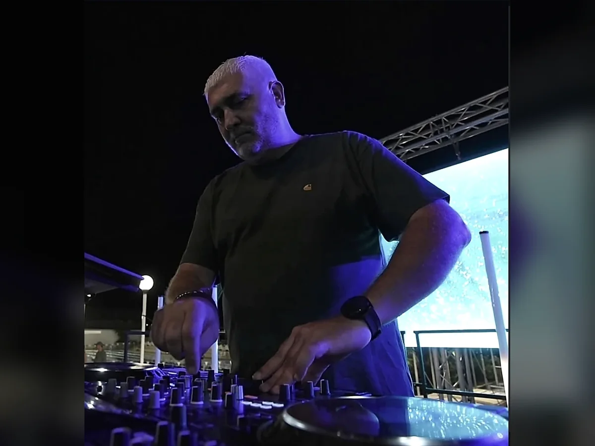

Sobre Rayco
DJ, speaker y animador en Tenerife, con más de 25 años de experiencia poniendo la música en celebraciones.
Pedir presupuesto
Lo que hace
Mucho más que poner música
Toda una vida dedicada a las celebraciones: sabe leer a la gente, elegir la canción de cada momento y llevar el evento de principio a fin.
DJ
Bodas, cumpleaños, fiestas privadas, cenas de empresa y fin de año.
Speaker
Presenta el evento y da paso a cada momento.
Animador
Mantiene el ambiente y anima la pista cuando toca.
Gestión de eventos
Ayuda a organizar los tiempos para que todo salga a su hora.
Redes